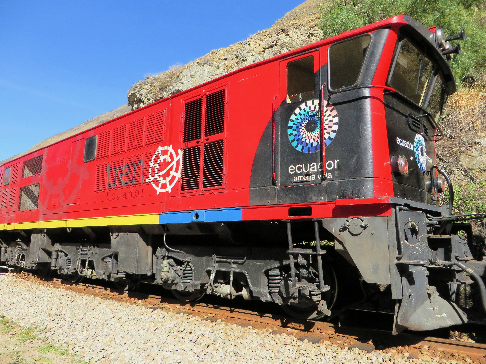
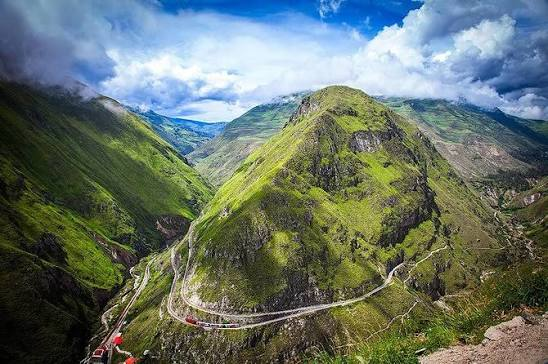

Nariz del Diablo
El tren desciende en zigzag por una pared casi vertical de roca andina.
Alausí, Chimborazo — Ecuador
Recorridos por la Nariz del Diablo, el centro histórico y las comunidades kichwa de Alausí. Paisaje, patrimonio y cultura, contados desde adentro.



Cañones, páramos y miradores sobre el nudo del Azuay.
La Nariz del Diablo, casas republicanas y templos centenarios.
Rutas guiadas en tren, a pie y en trekking, para cada ritmo.
Comunidades kichwa, textiles y gastronomía viva.
El destino en cifras
Atractivos destacados
El tren desciende en zigzag por una pared casi vertical de roca andina.
Fachadas republicanas y balcones de madera declarados patrimonio.

La estatua religiosa más alta del Ecuador con vista total del valle.